Team Leading
The utopia of becoming expendable
Matteo Di Paolantonio
23/11/2023
The trick
Empowering with ownership
“
If you wanna go fast go alone if you wanna go far go together
”
Mission and Vision
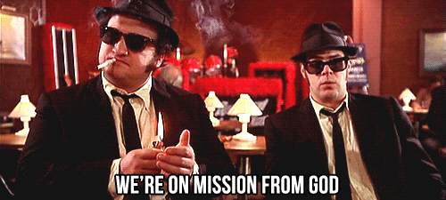
Mission and Vision
Narrative
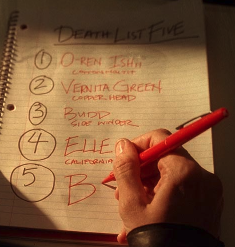
- Explicit objectives
- Firm vision
- Clear communication
- Constant feedback
- Support in difficult times
Mission and Vision
Common language
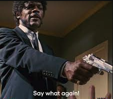
- Team agreements
- Playbook
- Docs
- Overcommunication
Mission and Vision
Facts
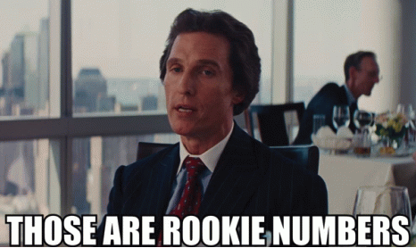
- Metrics
- Reports
- Dashboards
- Notes
Teammates
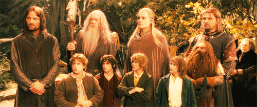
Teammates
Physical system
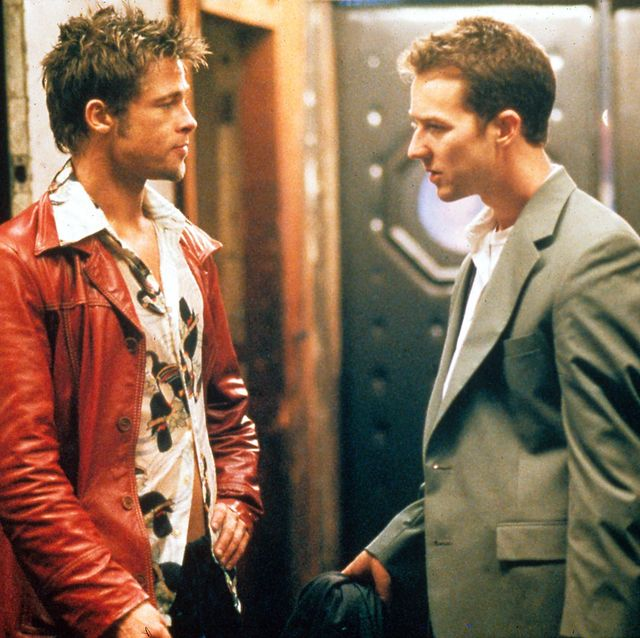
- Every person is a whole word
- Every team is a system
- Every system obeys physical laws
Teammates
Profiling
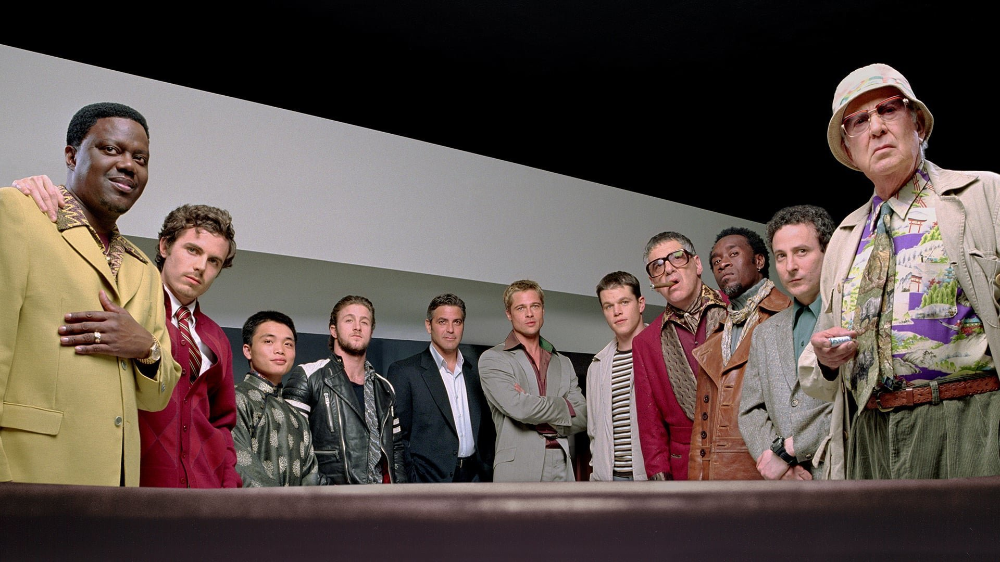
- Performers
- Doers
- Less effective doers
- Potential trouble sources
- Suppressive persons
Teammates
Dynamics
- Syncs
- Standups
- Retros
- Coffees
- Async channels
Tasks
Balance
- Leveraging strengths
- Improving weaknesses
- Challenging
- Achievable
Tasks
Safety nets
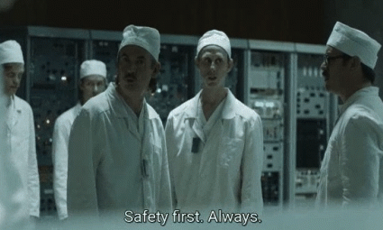
- Setting up
- Shadowing
- Reviewing
- Backing up
Tasks
Mistakes
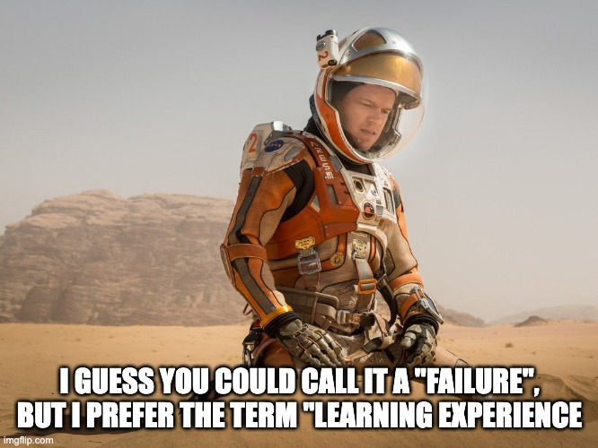
- Dynamics
- Postmortems
- No blaming
The lead
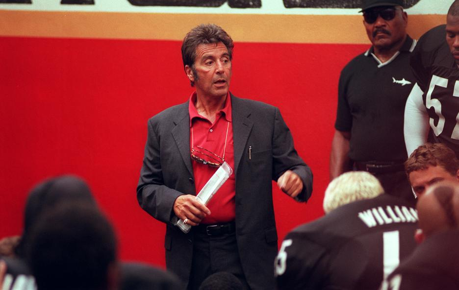
The lead
Servant
- Zero ego
- Open & transparent
- Rules bending
The lead
Passionate
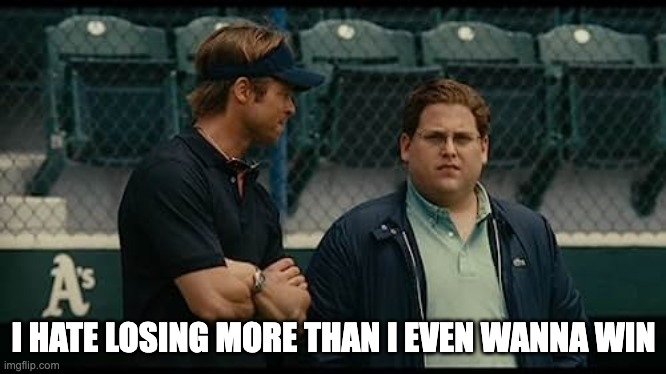
- It's contagious
- Celebrate the wins
- Team's problems are yours
Thank you
“
Projects will end, clients will come and go, companies will fall and rise, and all we have left are the human relationships we managed to create
”
“
Nobody cares how much you know until they know how much you care
”